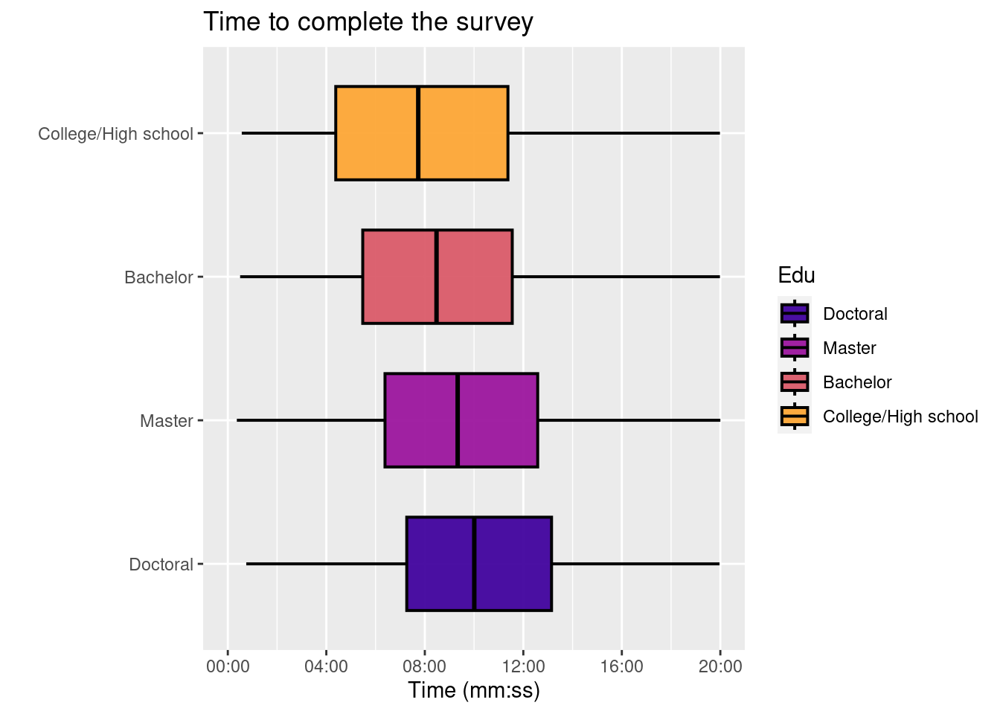

We have witnessed many people coming from different backgrounds experiment with Data Science in the recent years. The data set utilized for this project gathers data about people, their age, gender, country of residence, education level, current occupation, experience with writing code, and programming languages used.
The aim of this project is to:
Perform an exploratory analysis on the data set and identify interesting patterns in the data to understand more about Data Science enthusiasts.
Present the patterns in terms of visualization and get a deeper understanding of sub-patterns.
Data
Our data is from the survey response - Kaggle Data Science responses for R, conducted in 2020. This data contains insights into Data Science enthusiasts and their information from all over the world. The information consists of age, gender, country of residence, education level, current occupation, experience with writing code, and programming languages used.
Read the data set
data <-read.csv("kaggle_survey_2020_responses.csv")head(data)
Time.from.Start.to.Finish..seconds. Q1 Q2 Q3
1 1838 35-39 Man Colombia
2 289287 30-34 Man United States of America
3 860 35-39 Man Argentina
4 507 30-34 Man United States of America
5 78 30-34 Man Japan
6 401 30-34 Man India
Q4 Q5 Q6 Q7_Part_1 Q7_Part_2 Q7_Part_3
1 Doctoral degree Student 5-10 years Python R SQL
2 Master’s degree Data Engineer 5-10 years Python R SQL
3 Bachelor’s degree Software Engineer 10-20 years
4 Master’s degree Data Scientist 5-10 years Python SQL
5 Master’s degree Software Engineer 3-5 years Python
6 Bachelor’s degree Data Analyst < 1 years Python R
Q7_Part_4 Q7_Part_5 Q7_Part_6 Q7_Part_7 Q7_Part_8 Q7_Part_9 Q7_Part_10
1 C Javascript
2
3 Java Javascript Bash
4 Bash
5
6
Q7_Part_11 Q7_Part_12 Q7_OTHER Q8
1 MATLAB Other Python
2 Python
3 R
4 Python
5 Python
6 Python
Later, we find basic descriptives about data such as col names and dimensions
The data set contains 20036 rows representing 20037 participants in the survey. The 21 columns in the data set represent the survey questions, with exception to the time taken for survey column. Each column in the data represents respondent’s answer to each survey question.
To answer research question, I will focus on the following variables -
age - represents age of the respondent.
gender - represents the respondent’s gender.
In which country do you currently reside? - country of respondent.
highest level of formal education - The four categories of responses to the questionnaire are as follows: people who have less education than a bachelor’s degree, people who have a master’s degree, and people who have more education than a master’s degree (like a doctorate)
Select the title most similar to your current role (or most recent title if retired): - Selected Choice - the current profession of the respondent.
For how many years have you been writing code and/or programming? - experience with writing code or programming for each participant.
What programming languages do you use on a regular basis? (Select all that apply) - Selected Choice - Python - programming languages that are generally used by participants. The following columns have the selected answers to the above question. The answers span from Q7_part_1 to Q7_Other.
What programming language would you recommend an aspiring data scientist to learn first? - Selected Choice - The respondent’s recommendation of which programming language to learn.
Attaching package: 'scales'
The following object is masked from 'package:purrr':
discard
The following object is masked from 'package:readr':
col_factor
library(RColorBrewer)library(viridis)
Loading required package: viridisLite
Attaching package: 'viridis'
The following object is masked from 'package:scales':
viridis_pal
library(ggrepel)annotate <- ggplot2::annotate
We first mutate the data and create groups - Doctoral degree, Professional degree are mapped to “Higher than Master” and “Some college/university study without earning a bachelor’s degree,No formal education past high school” are mapped to “Lower than Bachelor”.
data <- data %>%mutate(Edu =case_when(Q4 =="Bachelor’s degree"~"Bachelor", Q4 =="Master’s degree"~"Master", Q4 %in%c("Doctoral degree","Professional degree") ~"Doctoral", Q4 %in%c("Some college/university study without earning a bachelor’s degree","No formal education past high school") ~"College/High school"))
We further mutate the data. The given countries are changed based on the continents. All countries in Europe are mapped to Europe, countries like India, China, etc are mapped to Asia.
data <- data %>%mutate(Continent =case_when(Q3 %in%c("Austria", "Belgium", "Bulgaria", "Croatia", "Czech Republic","Denmark", "Estonia", "Finland", "France", "Germany", "Greece","Hungary", "Ireland", "Italy", "Lativia", "Lithuania", "Netherlands", "Poland", "Portugal", "Romania", "Slovakia","United Kingdom of Great Britain and Northern Ireland","Slovenia","Spain", "Sweden", "Russia", "Switzerland","Ukraine", "Belarus", "Norway") ~"Europe", Q3 %in%c("Canada", "United States of America", "Mexico") ~"North America", Q3 %in%c("India", "China", "Japan", "Turkey", "South Korea", "Isreal", "Indonesia", "Hong Kong (S.A.R.) ","Singapore", "Viet Nam", "Pakistan", "Malaysia", "Bangladesh", "Philippines", "Sri Lanka", "Thailand", "Republic of Korea", "Saudi Arabia", "Taiwan", "Nepal", "United Arab Emirates") ~"Asia", Q3 %in%c("Argentina", "Brazil", "Chile", "Colombia", "Peru", "Venezuela") ~"South America", Q3 %in%c("Egypt", "Nigeria", "Kenya", "South Africa", "Morocco", "Algeria", "Ghana", "Tunisia") ~"Africa", Q3 %in%c("Australia", "New Zealand") ~"Australia"))
head(data)
Time.from.Start.to.Finish..seconds. Q1 Q2 Q3
1 1838 35-39 Man Colombia
2 289287 30-34 Man United States of America
3 860 35-39 Man Argentina
4 507 30-34 Man United States of America
5 78 30-34 Man Japan
6 401 30-34 Man India
Q4 Q5 Q6 Q7_Part_1 Q7_Part_2 Q7_Part_3
1 Doctoral degree Student 5-10 years Python R SQL
2 Master’s degree Data Engineer 5-10 years Python R SQL
3 Bachelor’s degree Software Engineer 10-20 years
4 Master’s degree Data Scientist 5-10 years Python SQL
5 Master’s degree Software Engineer 3-5 years Python
6 Bachelor’s degree Data Analyst < 1 years Python R
Q7_Part_4 Q7_Part_5 Q7_Part_6 Q7_Part_7 Q7_Part_8 Q7_Part_9 Q7_Part_10
1 C Javascript
2
3 Java Javascript Bash
4 Bash
5
6
Q7_Part_11 Q7_Part_12 Q7_OTHER Q8 Edu Continent
1 MATLAB Other Python Doctoral South America
2 Python Master North America
3 R Bachelor South America
4 Python Master North America
5 Python Master Asia
6 Python Bachelor Asia
The age column is then divided. We create divisions such as 8-21, 22-24, 25-29, 30-34, 35-39, 40-49, and 50+.
Further, to dig deeper based on continents, we group Europe and North America as a single entity and Australia, South America, and Africa as rest of the world. The reason for dividing it into 3 groups is to have almost similar populations.
data <- data %>%mutate(Continent2 =case_when(Continent =="Asia"~"Asia", Continent %in%c("Europe", "North America") ~"Europe + North America", Continent %in%c("Australia", "South America", "Africa") ~"Rest of the world"))
Potential research questions
In this project, some of the preliminary or basic analysis is done on excel and the following plots explore the following research questions in depth:
Number of countries involved in the data set and is the data set skewed towards a specific continent given the population?
Most recommended language for Data Science aspirants irrespective of gender, age, or country.
Which continent in the world has highest number of skilled Data Scientists based on the experience level?
Which education level is currently the most popular?
Respondents of which continents are majorly picking up skills in Data Science?
Can we explain education level based on gender(man and women) and age?
Is a highest level of education required to work in professions such as Research Scientist, Machine Learning Engineer, Data Scientist, Statiscian?
Education level vs number of people
From the below plot, we see that about 40% of respondents (count - 8000) have a Master’s degree or are close to obtaining one. A little bit fewer people say they have a bachelor’s degree (36 percent of those who took the survey). Over three quarters of respondents are people who participated in either the first-cycle or second-cycle studies at some point. Hence most of the respondents have Master’s degree.
education <-as.data.frame(table(data$Edu))ggplot(education, aes(reorder(Var1, +Freq), Freq))+geom_bar(col ="gray10", stat ="identity", width =0.6, fill ="lightblue")+scale_x_discrete(limits =c("Doctoral","Master", "Bachelor", "College/High school"))+labs(title ="Education level", y ="count", x ="Education level")
We will now examine the education metric. We use scatter charts and tile charts, respectively, to display the proportion of the indicated levels of both variables and the number of respondents to two indicators with the levels of the variables under consideration.
We observe a gender- and education-based breakdown of data enthusiasts. The “I prefer to define myself” options in the variable are limited to the two most popular levels, female and male, due to the small number of refusals and indications. There are four times fewer women than men among the respondents. The proportions of people with and without a college degree are very similar for both sexes, but it is clear that those without a college degree are more likely to be men than the rest of the sample. It is interesting to see that the gender with most “doctoral” degree and “College/High school” is men.
tile2 <- data %>%filter(Q2 %in%c("Woman", "Man")) %>%group_by(Q2, Edu) %>%summarise(count =n(), .groups ='drop') ggplot(tile2, aes(Edu, Q2))+geom_tile(aes(fill = count), colour ="gray10", alpha =0.5)+scale_x_discrete(limits =c("Doctoral","Master", "Bachelor", "College/High school"))+geom_text(aes(label =paste0(round(count/sum(tile2$count) *100,1), "%")), size =7)+labs(title ="Education level", subtitle ="count by education level and gender", y ="Gender", x ="Education level")
Age vs Education level
First, we consider education in relation to age. This time, the relationship seems natural. You have to be a certain age to get certain levels of education (becoming a doctor is hard for someone over 12 years old). The majority of people without a college degree or an undergraduate degree are between the ages of 18 and 21, while those with a graduate degree are typically between the ages of 25 and 29. People who are enthusiastic usually have a higher education than a graduate degree and are between the ages of 25 and 35. Only a select few individuals provided data of questionable reliability, as indicated by the highest yellow point (having a degree higher than a master’s degree is virtually impossible in countries I am familiar with, with the exception of very rare instances).
data %>%filter(Q1!="") %>%ggplot(., aes(Edu, Q1b, col = Edu))+geom_count()+scale_x_discrete(limits =c("Doctoral","Master", "Bachelor", "College/High school"))+scale_y_discrete(limits =c("50+","40-49","35-39","30-34","25-29","22-24","18-21"))+labs(title ="Education level", subtitle ="count by group and age", y ="Age", x ="Education level")
Continent vs educational level
The place of residence is the next metric variable that we will present. Every respondent provided information regarding his country of residence in response to question Q3. However, the variable’s numerous levels make it challenging to visualize and draw generalizations. This message has therefore been trans coded to continents (the code from the previous year’s edition is included in the help, where I went into greater detail about the subject of continents). It’s easy to see that Asians made up the most respondents, while people from Australia and Oceania made up the fewest. But the distribution of education is clearly different: Asians and Africans are much more likely than people from other continents to have a bachelor’s degree or less. There are more Masters and PhDs than Bachelors and Unfinished Students in Europe, North America, and Australia. On the other hand, there is a fairly even distribution in South America (middle of Asiatic-African and Euro-North American).
data %>%filter(Continent!="") %>%filter(Continent!="0") %>%ggplot(., aes(Edu, Continent, col = Edu))+geom_count()+scale_size_area(max_size =15)+scale_x_discrete(limits =c("Doctoral","Master", "Bachelor", "College/High school"))+labs(title ="Education level", subtitle ="count by group and continent", y ="Continent", x ="Education level")
We now visualize the relation between Experience level vs continent. We see that the count of Asians who are begginers (1-10 years) is much more than the number of experienced people (20+ years). Another interesting observation here is the number and percent of North Americans who are 20+ years experienced is greater than begginer level respondents.
options(repr.plot.width=20, repr.plot.height=7)data %>%filter(Continent!="") %>%filter(Continent!="0") %>%ggplot(., aes(Q6, Continent, col = Q6))+geom_count()+scale_size_area(max_size =15)+scale_x_discrete(limits =c("< 1 years", "1-2 years","10-20 years", "20+ years", "3-5 years", "5-10 years", "I have never written code"))+labs(title ="Experience level", subtitle ="count by group and continent", y ="Continent", x ="Experience level")
Position in the workplace is the final metric variable. We consider all individuals who answered question Q5 without selecting “other.” We examine the shares and the distribution in terms of education. Almost half of people with less than a bachelor’s degree are students. Among those with jobs, software engineers are at the top. People with bachelor’s degrees experience the same thing. Master’s degrees, on the other hand, show a marked shift: students are there as well, but almost as many people say they work in data science. Those with this level of education also include a lot of software engineers and data analysts. Research scientists are employed by those with the highest educational attainment (more than 60% of those surveyed hold this title). Additionally, many employees holding the position of data scientist possess this level of education.
options(repr.plot.width=50, repr.plot.height=7)tile1 <- data %>%filter(Q5!="") %>%filter(Q6!="") %>%filter(Q5!="Other") %>%group_by(Q5, Edu) %>%summarise(count =n(), .groups ='drop') ggplot(tile1, aes(Edu, Q5))+geom_tile(aes(fill = count), colour ="gray15")+scale_x_discrete(limits =c("Doctoral","Master", "Bachelor", "College/High school"))+geom_text(aes(label =paste0(round(count/sum(tile1$count) *100,1), "%")), size =2)+labs(title ="Education level", subtitle ="count by group and work", y ="Current role", x ="Education level", size ="Count", color ="Education level")
Time for each respondent
Last but not least, we examine the survey timing by well-known group. Since we suspect that the remaining questionnaires may have simply been interrupted in the middle and completed at a different time, these cases do not reliably inform us about the time of completion and have a significant impact on the distribution of this variable, we restricted our analysis to only those that were completed in less than 20 minutes. It is evident that the filling time does not significantly depend on the participant’s stated level of education. We notice that those with more than a bachelor’s degree take the longest amount of time to complete the questionnaire, while those with less than a bachelor’s degree take the shortest amount of time. The length of the survey, which also depends on the number of questions asked (a result of filters), may cause differences. As we have seen, people with more education are familiar with more aspects of data analysis, so their version of the questionnaire may have slightly more questions.
data %>%drop_na(Edu) %>%ggplot(., aes(Edu, as.numeric(as.character(Time.from.Start.to.Finish..seconds.)), fill = Edu))+geom_boxplot(outlier.size =1.7, outlier.shape =20, lwd =0.7, fatten =1.5, colour ="black",alpha =0.95, width =0.65)+scale_y_time(limits =c(0,1200), labels =function(l) strftime(l, '%M:%S'))+scale_x_discrete(limits =c("Doctoral","Master", "Bachelor", "College/High school"))+scale_fill_viridis_d(limits =c("Doctoral","Master", "Bachelor", "College/High school"), option ="plasma", begin =0.1, end =0.8)+coord_flip()+labs(x ="", y ="Time (mm:ss)", title ="Time to complete the survey")

CONCLUSION
With all the analysis above, we can answer the following questions-
The respondents are from 54 countries and the data is indeed skewed towards Asians. They make 50% of the participants, given its higher population (shown in excel sheet).
The most recommended language for Data Science aspirants irrespective of gender, age, or country is Python while R coming in the second place (shown in excel sheet).
North Americans are most skilled in terms of experience (10+ years of exp) attributing to approximately 30% of the total respondents. Asia and Africa has less than 10% of their respondents with 10+ yrs of experience.
We see that there is a clear correlation between Education level (completed degree) vs job role. In every continent, 50 or more percent of the respondents who have job as a Research Scientist have a doctoral degree. Europe has the highest percentage of Masters + Doctoral degree and thus the percentage of Research Scientists from Europe is the highest.
Africa and Asia respondents are majorly picking up Data Science skills with almost 50% of the respondents with less than 2 yrs of experience.
From the plot it is clear that in both men and women, the most popular education is Masters.
Since the survey has reached people who are in Data Science field, we see that it reached lesser number of women than men (15789 - men and 3878 - women). However, one interesting observation from plots is that the percentage of women with Masters + Doctoral degree is a little higher than the number of men with the same degrees.
Reflection
Since it is my first project in R, I learned that working with a data set involves taking raw data, cleaning it, then visualizing and interpreting different relationships. I focused on the variables that I was most intrigued by. Eg: I was curious about how gender/degrees influence jobs. What paths or roles do Data Science enthusiasts from different countries prefer? Which countries are currently getting into technology or Data Science? For a beginner which language is most recommended by experts to learn more Data Science? I’ve enjoyed learning the process for exploratory data analysis and visualization.